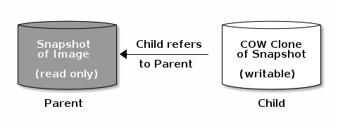

Snapshots¶
A snapshot is a read-only logical copy of an image at a particular point in
time: a checkpoint. One of the advanced features of Ceph block devices is that
you can create snapshots of images to retain point-in-time state history. Ceph
also supports snapshot layering, which allows you to clone images (for example,
VM images) quickly and easily. Ceph block device snapshots are managed using
the rbd command and several higher-level interfaces, including QEMU,
libvirt, OpenStack, and CloudStack.
Important
To use RBD snapshots, you must have a running Ceph cluster.
Note
Because RBD is unaware of any file system within an image (volume), snapshots are merely crash-consistent unless they are coordinated within the mounting (attaching) operating system. We therefore recommend that you pause or stop I/O before taking a snapshot.
If the volume contains a file system, the file system should be in an internally consistent state before a snapshot is taken. Snapshots taken without write quiescing could need an fsck pass before they are mounted again. To quiesce I/O you can use fsfreeze command. See the fsfreeze(8) man page for more details.
For virtual machines, qemu-guest-agent can be used to automatically freeze file systems when creating a snapshot.

Cephx Notes¶
When cephx authentication is enabled (it is by default), you must specify a user name or ID and a path to the keyring containing the corresponding key. See User Management for details.
rbd --id {user-ID} --keyring /path/to/secret [commands]
rbd --name {username} --keyring /path/to/secret [commands]
For example:
rbd --id admin --keyring /etc/ceph/ceph.keyring [commands]
rbd --name client.admin --keyring /etc/ceph/ceph.keyring [commands]
Tip
Add the user and secret to the CEPH_ARGS environment variable to
avoid re-entry of these parameters.
Snapshot Basics¶
The following procedures demonstrate how to create, list, and remove
snapshots using the rbd command.
Create Snapshot¶
To create a snapshot, use the rbd snap create command and specify the pool
name, the image name, and the snap name:
rbd snap create {pool-name}/{image-name}@{snap-name}
For example:
rbd snap create rbd/foo@snapname
List Snapshots¶
To list the snapshots of an image, use the rbd snap ls command and specify
the pool name and the image name:
rbd snap ls {pool-name}/{image-name}
For example:
rbd snap ls rbd/foo
Roll back Snapshot¶
To roll back to a snapshot, use the rbd snap rollback command and specify
the pool name, the image name, and the snap name:
rbd snap rollback {pool-name}/{image-name}@{snap-name}
For example:
rbd snap rollback rbd/foo@snapname
Note
Rolling back an image to a snapshot means overwriting the current version of the image with data from a snapshot. The time it takes to execute a rollback increases with the size of the image. It is faster to clone from a snapshot than to roll back an image to a snapshot. Cloning from a snapshot is the preferred method of returning to a pre-existing state.
Delete a Snapshot¶
To delete a snapshot, use the rbd snap rm command and specify the pool
name, the image name, and the snap name:
rbd snap rm {pool-name}/{image-name}@{snap-name}
For example:
rbd snap rm rbd/foo@snapname
Note
Ceph OSDs delete data asynchronously, so deleting a snapshot does
not immediately free up the capacity of the underlying OSDs. This process is
known as “snaptrim”, and is referred to as such in ceph status output.
Purge Snapshots¶
To delete all snapshots, use the rbd snap purge command and specify the
pool name and the image name:
rbd snap purge {pool-name}/{image-name}
For example:
rbd snap purge rbd/foo
Layering¶
Ceph supports the ability to create many copy-on-write (COW) clones of a block device snapshot. Snapshot layering enables Ceph block device clients to create images very quickly. For example, you might create a block device image with a Linux VM written to it, snapshot the image, protect the snapshot, and create as many copy-on-write clones as you like. A snapshot is read-only, so cloning a snapshot simplifies semantics, making it possible to create clones rapidly.

Note
The terms “parent” and “child” refer to a Ceph block device snapshot (parent) and the corresponding image cloned from the snapshot (child). These terms are important for the command line usage below.
Each cloned image (child) stores a reference to its parent image, which enables the cloned image to open the parent snapshot and read it.
A copy-on-write clone of a snapshot behaves exactly like any other Ceph block device image. You can read to, write from, clone, and resize cloned images. There are no special restrictions with cloned images. However, the copy-on-write clone of a snapshot depends on the snapshot, so you must protect the snapshot before you clone it. The diagram below depicts this process.
Note
Ceph supports the cloning of only “RBD format 2” images (that is,
images created without specifying --image-format 1). The Linux kernel
client supports cloned images beginning with the 3.10 release.
Getting Started with Layering¶
Ceph block device layering is a simple process. You must have an image. You must create a snapshot of the image. You must protect the snapshot. After you have performed these steps, you can begin cloning the snapshot.

The cloned image has a reference to the parent snapshot, and includes the pool ID, the image ID, and the snapshot ID. The inclusion of the pool ID means that you may clone snapshots from one pool to images in another pool.
Image Template: A common use case for block device layering is to create a base image and a snapshot that serves as a template for clones. For example: a user may create an image for a Linux distribution (for example, Ubuntu 22.04) and create a snapshot of it. The user may occasionally update the image and create a new snapshot (by using such commands as
sudo apt-get update,sudo apt-get upgrade, orsudo apt-get dist-upgradefollowed byrbd snap create). As the image matures, the user can clone any one of the snapshots.Extended Template: A more advanced use case includes extending a template image to provide more information than a base image. For example, a user may clone an image (for example, a VM template) and install other software (for example, a database, a content management system, an analytics system) and then snapshot the extended image, which may itself be updated just like the base image.
Template Pool: One way to use block device layering is to create a pool that contains (1) base images that act as templates and (2) snapshots of those templates. You may then extend read-only privileges to users so that they may clone the snapshots even though they do not have permissions that allow them to write or execute within the pool.
Image Migration/Recovery: One way to use block device layering is to migrate or recover data from one pool into another pool.
Protecting a Snapshot¶
Clones access the parent snapshots. All clones would break if a user inadvertently deleted the parent snapshot. To prevent data loss, you must protect the snapshot before you can clone it:
rbd snap protect {pool-name}/{image-name}@{snapshot-name}
For example:
rbd snap protect rbd/foo@snapname
Note
You cannot delete a protected snapshot.
Cloning a Snapshot¶
To clone a snapshot, specify the parent pool, the parent image, and the parent snapshot; and also the child pool together with the image name. You must protect the snapshot before you can clone it:
rbd clone {pool-name}/{parent-image-name}@{snap-name} {pool-name}/{child-image-name}
For example:
rbd clone rbd/foo@snapname rbd/bar
Note
You may clone a snapshot from one pool to an image in another pool. For example, you may maintain read-only images and snapshots as templates in one pool, and writeable clones in another pool.
Unprotecting a Snapshot¶
Before you can delete a snapshot, you must first unprotect it. Additionally, you may NOT delete snapshots that have references from clones. You must flatten or delete each clone of a snapshot before you can unprotect the snapshot:
rbd snap unprotect {pool-name}/{image-name}@{snapshot-name}
For example:
rbd snap unprotect rbd/foo@snapname
Listing Children of a Snapshot¶
To list the children of a snapshot, use the rbd children command and
specify the pool name, the image name, and the snap name:
rbd children {pool-name}/{image-name}@{snapshot-name}
For example:
rbd children rbd/foo@snapname
Flattening a Cloned Image¶
Cloned images retain a reference to the parent snapshot. When you remove the reference to the parent snapshot from the clone, you effectively “flatten” the clone by copying the data stored in the snapshot to the clone. The time it takes to flatten a clone increases with the size of the snapshot. To delete a snapshot, you must first flatten the child images (or delete them):
rbd flatten {pool-name}/{image-name}
For example:
rbd flatten rbd/bar
Note
Since a flattened image contains all the data stored in the snapshot, a flattened image takes up more storage space than a layered clone does.